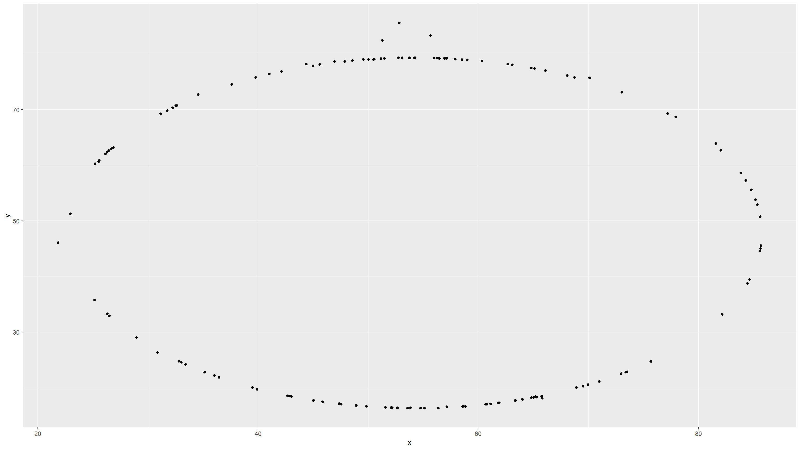

If it's confusing that the data frame is called `datasaurus_dozen` when it contains 13 datasets, you're not alone! Have you heard of a [baker's dozen](https://en.wikipedia.org/wiki/Dozen#Baker's_dozen)?The data frame we will be working with today is called
datasaurus_dozen and it’s in the datasauRus
package. Actually, this single data frame contains 13 datasets, designed
to show us why data visualisation is important and how summary
statistics alone can be misleading. The different datasets are maked by
the dataset variable.
To find out more about the dataset, type the following in your Console:
A question mark before the name of an object will always bring up its help file. This command must be run in the Console.
1. Based on the help file, how many rows and how many columns does the `datasaurus_dozen` file have? What are the variables included in the data frame? Add your responses to your lab report. When you're done, commit your changes with the commit message "Added answer for Ex 1", and push.
CK: There are 1846 rows and 3 columns in the datasaurus_dozen data. The variables are "dataset", "x", and "y".
Let's take a look at what these datasets are. To do so we can make a *frequency table* of the dataset variable:
```r
datasaurus_dozen %>%
count(dataset) %>%
print(13)## # A tibble:
## # 13 × 2
## dataset
## <chr>
## 1 away
## 2 bullseye
## 3 circle
## 4 dino
## 5 dots
## 6 h_lines
## 7 high_lines
## 8 slant_down
## 9 slant_up
## 10 star
## 11 v_lines
## 12 wide_lines
## 13 x_shape
## # … with 1
## # more
## # variable:
## # n <int>Matejka, Justin, and George Fitzmaurice. "Same stats, different graphs: Generating datasets with varied appearance and identical statistics through simulated annealing." Proceedings of the 2017 CHI Conference on Human Factors in Computing Systems. ACM, 2017.The original Datasaurus (dino) was created by Alberto
Cairo in this
great blog post. The other Dozen were generated using simulated
annealing and the process is described in the paper Same Stats,
Different Graphs: Generating Datasets with Varied Appearance and
Identical Statistics through Simulated Annealing by Justin Matejka
and George Fitzmaurice. In the paper, the authors simulate a variety of
datasets that the same summary statistics to the Datasaurus but have
very different distributions.
y vs. x for the dino
dataset. Then, calculate the correlation coefficient between
x and y for this dataset.Below is the code you will need to complete this exercise. Basically, the answer is already given, but you need to include relevant bits in your Rmd document and successfully knit it and view the results.
Start with the datasaurus_dozen and pipe it into the
filter function to filter for observations where
dataset == "dino". Store the resulting filtered data frame
as a new data frame called dino_data.
dino_data = datasaurus_dozen %>%
filter(dataset == "dino")There is a lot going on here, so let’s slow down and unpack it a bit.
First, the pipe operator: %>%, takes what comes
before it and sends it as the first argument to what comes after it. So
here, we’re saying filter the datasaurus_dozen
data frame for observations where dataset == "dino".
Second, the assignment operator: =, assigns the name
dino_data to the filtered data frame. You will also
sometimes see <- used, but I (AM) will be discouraging
its usage.
Next, we need to visualize these data. We will use the
ggplot function for this. Its first argument is the data
you’re visualizing. Next we define the aesthetic mappings.
In other words, the columns of the data that get mapped to certain
aesthetic features of the plot, e.g. the x axis will
represent the variable called x and the y axis
will represent the variable called y. Then, we add another
layer to this plot where we define which geometric shapes
we want to use to represent each observation in the data. In this case
we want these to be points,m hence geom_point.
ggplot(data = dino_data, mapping = aes(x = x, y = y)) +
geom_point()If this seems like a lot, it is. And you will learn about the philosophy of building data visualizations in layer in detail next week. For now, follow along with the code that is provided.
For the second part of this exercises, we need to calculate a summary
statistic: the correlation coefficient. Correlation coefficient, often
referred to as \(r\) in statistics,
measures the linear association between two variables. You will see that
some of the pairs of variables we plot do not have a linear relationship
between them. This is exactly why we want to visualize first: visualize
to assess the form of the relationship, and calculate \(r\) only if relevant. In this case,
calculating a correlation coefficient really doesn’t make sense since
the relationship between x and y is definitely
not linear – it’s dinosaurial!
But, for illustrative purposes, let’s calculate correlation
coefficient between x and y.
Start with `dino_data` and calculate a summary statistic that we will call `r` as the `cor`relation between `x` and `y`.dino_data %>%
summarize(r = cor(x, y))## # A tibble: 1 × 1
## r
## <dbl>
## 1 -0.0645CK: Exercise 2 code chunks above generates scatterplot of y vs x in dino dataset and calculates the correlation coefficient to be -0.0645.
This is a good place to pause, commit changes with the commit message “Added answer for Ex 2”, and push.
y vs. x for the star
dataset. You can (and should) reuse code we introduced above, just
replace the dataset name with the desired dataset. Then, calculate the
correlation coefficient between x and y for
this dataset. How does this value compare to the r of
dino?star_data = datasaurus_dozen %>%
filter(dataset == "star")
ggplot(data = star_data, mapping = aes(x = x, y = y)) +
geom_point()star_data %>%
summarize(r = cor(x, y))## # A tibble: 1 × 1
## r
## <dbl>
## 1 -0.0630CK: The correlation coefficient of the star dataset is similar to that of the dino dataset.
This is another good place to pause, commit changes with the commit message “Added answer for Ex 3”, and push.
y vs. x for the circle
dataset. You can (and should) reuse code we introduced above, just
replace the dataset name with the desired dataset. Then, calculate the
correlation coefficient between x and y for
this dataset. How does this value compare to the r of
dino?circle_data = datasaurus_dozen %>%
filter(dataset == "circle")
ggplot(data = circle_data, mapping = aes(x = x, y = y)) +
geom_point()
circle_data %>%
summarize(r = cor(x, y))## # A tibble: 1 × 1
## r
## <dbl>
## 1 -0.0683CK: The correlation coefficient of the circle dataset is similar to that of the dino dataset.
You should pause again, commit changes with the commit message “Added answer for Ex 4”, and push.
Facet by the dataset variable, placing the plots in a 3 column grid, and don't add a legend.ggplot(datasaurus_dozen, aes(x = x, y = y, color = dataset))+
geom_point()+
facet_wrap(~ dataset, ncol = 3) +
theme(legend.position = "none")And we can use the group_by function to generate all the
summary correlation coefficients.
datasaurus_dozen %>%
group_by(dataset) %>%
summarize(r = cor(x, y)) %>%
print(13)## # A tibble:
## # 13 × 2
## dataset
## <chr>
## 1 away
## 2 bullseye
## 3 circle
## 4 dino
## 5 dots
## 6 h_lines
## 7 high_lines
## 8 slant_down
## 9 slant_up
## 10 star
## 11 v_lines
## 12 wide_lines
## 13 x_shape
## # … with 1
## # more
## # variable:
## # r <dbl>You’re done with the data analysis exercises, but we’d like you to do two more things:
Click on the gear icon in on top of the R Markdown document, and select “Output Options…” in the dropdown menu. In the pop up dialogue box go to the Figures tab and change the height and width of the figures, and hit OK when done. Then, knit your document and see how you like the new sizes. Change and knit again and again until you’re happy with the figure sizes. Note that these values get saved in the YAML.
You can also use different figure sizes for different figures. To do
so click on the gear icon within the chunk where you want to make a
change. Turn on “Use custom figure size” and enter the size for this
figure. Changing the figure sizes added new options to these chunks:
fig.width and fig.height. You can change them
by defining different values directly in your R Markdown document as
well with code like this:
knitr::opts_chunk(fig.width=3, fig.height=3)Once again click on the gear icon in on top of the R Markdown document, and select “Output Options…” in the dropdown menu. In the General tab of the pop up dialogue box try out different Syntax highlighting and theme options. Hit OK and knit your document to see how it looks. Play around with these until you’re happy with the look.
Yay, you’re done! Commit all remaining changes, use the commit message “Done with Lab 1!”, and push. Before you wrap up the assignment, make sure all documents are updated on your GitHub repo.
10 points if code and descriptions are complete for all questions. 5 points for >= five commits with informative messages made to the repo.